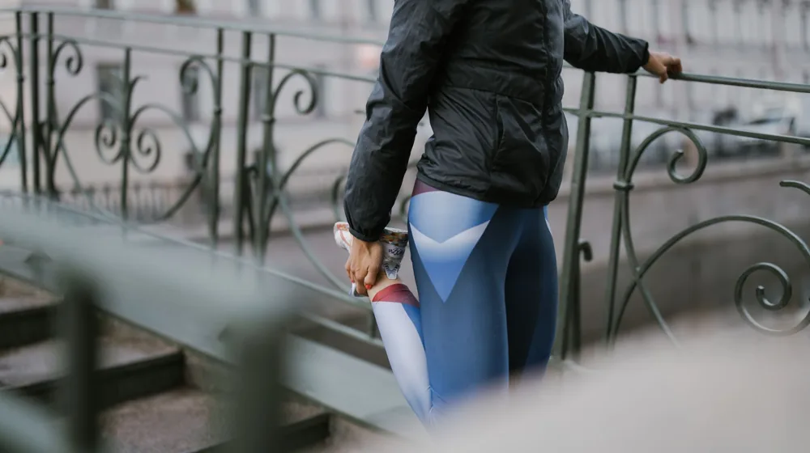

런닝 루틴, 이렇게 짜면 실패 안 한다! 초보자도 바로 시작하는 3단계 가이드
사진: MART PRODUCTION / Pexels (무료 이미지, 출처 표기)
달리기 목표, 왜 명확하게 설정해야 할까?

새로운 취미로 달리기를 시작했거나, 더 건강해지기 위해 런닝을 계획하고 계신가요? 많은 분이 무작정 달리기부터 시작하지만, 목표 없이 달리는 것은 오히려 쉽게 지치거나 부상으로 이어질 수 있습니다. 나에게 맞는 런닝 루틴을 만들기 위해서는 먼저 '왜 달리는지'에 대한 명확한 목표 설정이 중요합니다.
개인의 목표에 맞춰 훈련 계획을 세우면 동기 부여를 유지하고, 효율적으로 성과를 달성하며, 불필요한 부상 위험을 줄일 수 있습니다. 예를 들어, 마라톤 완주가 목표인 사람과 체중 감량이 목표인 사람의 루틴은 완전히 달라야 합니다.
초보자를 위한 런닝 루틴, 3단계로 시작하기
달리기가 처음이거나 오랜만에 다시 시작하는 분이라면, 무리하지 않고 점진적으로 강도를 높이는 것이 핵심입니다. 아래 3단계 가이드를 따라 런닝 루틴을 설계해 보세요. 2026년 11월 기준으로 많은 전문가가 권장하는 방법입니다.
-
1단계: 현실적인 목표 설정하기
주 3회 30분 논스톱 달리기, 5km 완주, 체중 3kg 감량 등 구체적이고 달성 가능한 목표를 세웁니다. 처음부터 너무 큰 목표는 좌절감을 줄 수 있으니, 작은 성공들을 쌓아나가는 전략이 좋습니다.
-
2단계: 현재 체력 수준 파악하기 (걷기-달리기 병행)
처음부터 쉬지 않고 달리려 하지 마세요. '걷기-달리기'를 병행하는 것이 안전하고 효과적입니다. 예를 들어, 1분 달리고 2분 걷기를 반복하며 총 30분 운동하는 방식으로 시작합니다. 몇 주에 걸쳐 달리는 시간을 늘리고 걷는 시간을 줄여나가세요.
-
3단계: 점진적으로 훈련량 늘리기 (10% 규칙)
부상을 예방하기 위해 '10% 규칙'을 지키는 것이 좋습니다. 이는 주간 총 달리기 거리를 전 주 대비 10% 이상 늘리지 않는다는 원칙입니다. 신체 적응 시간을 충분히 주어 근육과 관절에 무리가 가지 않도록 합니다.
초보자를 위한 주간 런닝 계획 (예시)
위 표는 예시이며, 자신의 체력과 컨디션에 맞춰 유연하게 조절해야 합니다. 정확한 사항은 전문가와 상담하거나 런닝 관련 공식 커뮤니티에서 더 많은 정보를 얻으시길 권장합니다.
목표별 런닝 루틴 설계: 체중 감량, 지구력, 스피드
이제 기본적인 런닝이 익숙해졌다면, 구체적인 목표에 따라 훈련 방식을 조절할 때입니다.
-
체중 감량: 인터벌 런닝 & 지속주
지방 연소 효율을 높이려면 중강도 이상의 운동을 꾸준히 하는 것이 좋습니다. 짧은 시간 고강도로 달리고 휴식하는 '인터벌 런닝'은 칼로리 소모를 극대화하며, 일정한 속도로 장시간 달리는 '지속주'는 꾸준한 지방 연소에 효과적입니다. 주 2~3회는 인터벌, 1회는 지속주를 섞어 보세요. -
지구력 향상: 장거리 주 (LSD)
마라톤 완주 등 장거리 목표가 있다면 'LSD(Long Slow Distance)' 훈련이 필수입니다. 평소보다 느린 속도로 긴 거리를 달림으로써 심폐 지구력을 키우고 근육의 피로 저항력을 높입니다. 주 1회 정도 꾸준히 실시하며 서서히 거리를 늘려나갑니다. -
스피드 향상: 인터벌 트레이닝 & 언덕 훈련
달리기 속도를 높이고 싶다면 '인터벌 트레이닝'과 '언덕 훈련'이 효과적입니다. 인터벌 트레이닝은 최대 속력의 80~90%로 짧게 달린 후 완전히 회복하는 시간을 갖는 것을 반복합니다. 언덕 훈련은 오르막길을 달리며 다리 근력과 심폐 기능을 동시에 강화합니다. 부상 위험이 높으니 충분한 워밍업 후 진행하고, 주 1회 정도만 실시합니다.
부상 없이 오래 달리는 법: 워밍업, 쿨다운, 신발 선택
꾸준한 런닝을 위해서는 부상 예방이 가장 중요합니다. 단순한 동작으로 보이지만, 올바른 준비와 마무리는 런닝 생활을 지속하는 데 큰 영향을 미칩니다.
1. 워밍업 (동적 스트레칭): 런닝 전 5~10분간 가볍게 조깅하거나, 다리 흔들기, 팔 돌리기 등 동적인 스트레칭으로 근육을 이완시키고 체온을 높여야 합니다. 정적인 스트레칭(근육을 길게 늘린 상태 유지)은 런닝 후 하는 것이 좋습니다.
2. 쿨다운 (정적 스트레칭): 달리기를 마친 후 5~10분간 천천히 걸으며 심박수를 낮추고, 햄스트링, 종아리, 허벅지 등 주요 근육을 길게 늘려주는 정적 스트레칭을 실시합니다. 이는 근육의 긴장을 풀어주고 유연성을 높여 부상 위험을 줄입니다.
3. 올바른 런닝화 선택: 자신의 발 모양과 아치 형태, 달리기 스타일에 맞는 런닝화를 신는 것이 중요합니다. 런닝화는 쿠셔닝이 좋고 충격 흡수 능력이 뛰어난 제품을 선택하여 관절 보호에 신경 써야 합니다. 일반적으로 런닝화는 500~800km 정도 달리면 수명이 다하므로, 주기적으로 교체하는 것이 좋습니다.
꾸준함을 유지하는 동기 부여 및 관리 팁
런닝 루틴을 성공적으로 지속하기 위해서는 동기 부여와 체계적인 관리가 필수적입니다.
- 기록 관리 앱 활용: 스트라바(Strava), 나이키 런 클럽(Nike Run Club) 등 런닝 기록 앱을 활용해 자신의 달리기 거리, 속도, 시간 등을 기록하세요. 시각적인 데이터는 성취감을 높이고 다음 훈련 계획을 세우는 데 큰 도움이 됩니다.
- 함께 달릴 동반자 찾기: 혼자 달리는 것이 지루하다면 런닝 크루나 친구와 함께 달려보세요. 서로 격려하고 경쟁하며 더욱 즐겁게 런닝을 이어갈 수 있습니다.
- 작은 보상 설정: 목표를 달성했을 때 자신에게 작은 보상을 주세요. 새로운 런닝 장비 구매, 맛있는 음식 먹기 등 스스로에게 동기를 부여하는 방법입니다.
- 충분한 휴식과 영양: 달리기는 전신 운동이므로 충분한 휴식과 균형 잡힌 영양 섭취가 중요합니다. 특히 휴식은 근육 회복과 성장에 필수적이므로, 주 1~2회는 꼭 휴식일을 가지세요.
🔗 이 글도 함께 보면 좋아요: 한옥 미식 여행, 초보자도 완벽하게 즐기는 3단계 가이드
관련 추천 상품
런닝화, 런닝복, 스포츠 시계 관련 인기 상품 보러가기
이 포스팅은 쿠팡 파트너스 활동의 일환으로, 이에 따른 일정액의 수수료를 제공받습니다.